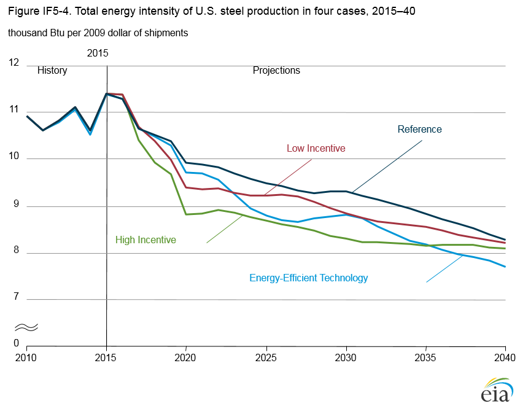

Steel Industry Energy Consumption: Sensitivity to Technology Choice, Fuel Prices, and Carbon Prices in the AEO2016 Industrial Demand Module
Release Date: 7/7/16
The manufacture of steel and related products is an energy-intensive process. According to the U.S. Energy Information Administration’s (EIA) Manufacturing Energy Consumption Survey (MECS), steel industry energy consumption in 2010 totaled 1,158 trillion British thermal units (Btu), representing 8% of total manufacturing energy consumption [1]. Energy consumption in the steel industry is largely for crude steel production using basic oxygen furnace (BOF) and electric arc furnace (EAF) technologies. Overall energy intensity in EAF, used primarily to melt scrap steel, is significantly lower than in BOF, which is used to create virgin steel by reducing (i.e., removing oxygen from) iron ore [2]. In 2014, BOF technology accounted for 37% of total U.S. steel production, and EAF accounted for 63% of the total [3]. Over the past two decades, a shift from BOF to EAF has contributed to a substantial reduction in the energy intensity of the U.S. steel industry. From 1991 to 2010, the EAF share of total U.S. steel production in physical units increased from 38% to 61%, and the overall energy intensity of crude steel production in Btu per metric ton decreased by 37% [4].
The basic process choice for crude steel production is not the only factor affecting energy intensity in the steel industry. Technology choices are based on product specifications, demand, fuel prices, and environmental policies. Technology advances in both BOF and EAF crude steel production processes—including blast furnace gas recovery, pulverized coal injection, and scrap preheating—as well as advances in rolling and casting processes have continued to lower the energy intensity of the overall manufacturing processes for steel and finished steel products. For example, direct reduced iron (DRI), a newer technology used only recently in the United States [5], is now commercially available and growing, accounting for 8 million tons (9%) of iron production in 2015. DRI involves the direct conversion of iron ore using a reducing gas (usually natural gas). The resulting sponge iron is readily used as feed in the EAF process. The DRI process performs the same function as a blast furnace, in that it converts iron ore to iron, but it does not involve the use of coke (produced by anaerobic baking of metallurgical coal). The DRI process converts iron ore to iron using less energy and with a lower capital cost than the blast furnace process. In addition, DRI plants in the United States are able to take advantage of relatively low natural gas prices [6].
In the future, steelmaking processes and technologies will continue to evolve in response to commodity prices for iron ore and scrap steel, investment in energy efficiency, product-specification demand, environmental regulations, and fuel prices. Differences in those factors can change the processes (BOF or EAF) and technologies used for each process, which in turn can lead to differences in energy intensity and fuel mix. However, because capital investments in particular technologies last for many years, energy use does not react quickly to price changes. To explore how such conditions affect steel technology choice and energy intensity, this article compares the Annual Energy Outlook 2016 (AEO2016) Reference case with three alternative cases, two of which include demand-side energy efficiency incentives and one that assumes more rapid adoption of energy-efficient technologies. Although fuel intensity and some technology choices vary across the AEO2016 Reference case and alternative cases, the major choice in 2040 remains either BOF or EAF. New or revolutionary technological breakthroughs are not assumed for this analysis.
Energy use in steelmaking depends on both the technology chosen for a process step and the energy intensity of the different technologies. In the steelmaking process, technology choices may be available in some but not all of the following process steps. Iron production has two alternative technologies: blast furnace (BF) and DRI. The BF process reduces iron ore, using a mixture of iron ore, coking coal, and limestone. The BF output is further processed in a BOF to produce steel. DRI reduces iron, which can then be fed into either a BOF or an EAF to produce crude steel. A BOF receives iron either from a BF or from the DRI process and uses oxygen to remove impurities. An EAF melts down steel scrap to produce steel and can also use DRI. Continuous casting can then be used to produce slabs of molten steel for further processing, and hot rolling can be used to further process the cast steel into intermediate and final products.
Alternative cases
In two of the AEO2016 alternative cases, CO2 fees are used as a proxy for demand-side energy efficiency incentives. A third case assumes that more efficient technology is available, and that new, more energy-efficient capacity will be available sooner than in the Reference case. These alternative cases assume that technology and process choices achieve more energy efficiency than in the AEO2016 Reference case, as existing steelmaking capacity is retired and new capacity is brought online to meet the projected growth in industry shipments [7].
Industrial Efficiency Incentive Low (Low Incentive) case
In the Low Incentive case, a CO2 fee is used as a proxy for demand-side energy efficiency incentives. The fee increases gradually from zero in 2017 to $12.50 (2015 dollars) per metric ton (mt) of CO2 in 2023. After 2023 the CO2 fee increases by 5%/year, to approximately $29/mt CO2 in 2040.
Industrial Efficiency Incentive High (High Incentive) case
The High Incentive case also uses a CO2 fee as a proxy for demand-side energy efficiency incentives. In this case, the fee increases gradually from zero in 2017 to $35/mt CO2 (2015 dollars) in 2023. Thereafter, the CO2 fee increases by 5%/year, to approximately $80/mt CO2 in 2040.
Energy Efficiency for Manufacturing Industries with Technical Choice (Energy-Efficient Technology) case
The Energy-Efficient Technology case assumes the deployment of more energy-efficient technologies over time than in the AEO2016 Reference case in five industries—aluminum, cement and lime, glass, iron and steel, and paper—with no demand-side efficiency incentives. Existing technologies are retired sooner, and new technologies have shorter lifespans than in the AEO2016 Reference case, providing more opportunities for deployment of energy-efficient technologies. In addition, new technologies penetrate the industry more rapidly than in the Reference case.
The CO2 fee paths in the Low Incentive and High Incentive cases (Figure IF5-1) translate to higher fuel prices for metallurgical coal, natural gas, and electricity than in the AEO2016 Reference case, with the impacts differing for each fuel. The largest price impact is on metallurgical coal, the smallest price impact is on electricity, and the price impact on natural gas falls between the two.
Results
Technology choice
In the High Incentive and Low Incentive cases, differences in the prices of metallurgical coal, natural gas, and electricity that result from the inclusion of demand-side energy efficiency incentives favor technology choices that use less metallurgical coal and more natural gas and electricity than in the Reference case. The metallurgical coal price is 20% higher in the Low Incentive case than in the Reference case and 56% higher in the High Incentive case than in the Reference case in 2025, and the price differences continue to increase through 2040. Similarly, natural gas prices in 2025 are 10% higher in the Low Incentive case than in the Reference case and 38% higher in the High Incentive case than in the Reference case. The smallest effects are on electricity prices; the electricity price is 8% higher in the Low Incentive case than in the AEO2016 Reference case and 23% higher in the High Incentive case in 2025 than in the AEO2016 Reference case.
Changes in the alternative case assumptions affect both the process choice and technology choice. In terms of process, the selection of BOF or EAF for crude steel production results in the largest energy consumption difference. Over the projection period, across all cases, most of the growth in steel output is in EAF. As a result, crude steel production uses relatively more natural gas over time, and its energy intensity declines.
In the AEO2016 Reference case, BOF output increases by 1.3%/year on average from 2015 to 2025 (Figure IF5-2), while EAF output grows at more than twice that rate. Between 2025 and 2040, total steel output growth slows. BOF output in the Reference case increases by 0.4%/year, and EAF output increases by 1.6%/year. As a result of more rapid EAF growth, the EAF output share increases from 62% in 2015 to 69% in 2040. The increasing EAF output share in the Reference case continues the long-term trend toward more EAF steel production in the United States.
In the Low Incentive case, coal prices are higher than in the Reference case, and the difference between metallurgical coal prices and electricity prices is generally greater than in the Reference case. As a result, in the Low Incentive case BOF production of crude steel increases by 0.4%/year on average from 2015 to 2025 and by 0.5%/year from 2025 to 2040, while EAF output grows by 2.9%/year from 2015 to 2025 and by 1.8%/year from 2025 to 2040. Because metallurgical coal is more expensive in the Low Incentive case than in the Reference case, the BOF output share declines more rapidly than in the Reference case (Table IF5-1).
| AEO case and type of production | 2015 | 2025 | 2040 |
|---|---|---|---|
| Reference case | |||
| Basic oxygen furnace | 38% | 35% | 31% |
| Electric arc furnace | 62% | 65% | 69% |
| Low Incentive case | |||
| Basic oxygen furnace | 38% | 33% | 29% |
| Electric arc furnace | 62% | 67% | 71% |
| High Incentive case | |||
| Basic oxygen furnace | 38% | 30% | 28% |
| Electric arc furnace | 62% | 70% | 72% |
| Energy-Efficient Technology case | |||
| Basic oxygen furnace | 39% | 32% | 30% |
| Electric arc furnace | 61% | 68% | 70% |
In the High Incentive case, the difference between metallurgical coal prices and electricity prices also is greater than in the AEO2016 Reference case, by an even a larger amount, and the prices are much higher than in the Reference case. As a result, BOF output declines by 1.5%/year on average from 2015 to 2025 and increases by 1.7%/year from 2025 to 2040, while EAF output increases by 2.1%/year from 2015 to 2025 period and by 2.5%/year from 2025 to 2040. In response to increasing CO2 prices in the High Incentive case, the BOF output share declines by 8 percentage points from 2015 to 2025 and by a more moderate 2 percentage points from 2025 to 2040 as BOF output increases.
In the Energy-Efficient Technology case, BOF output grows by an average of 0.2%/year from 2015 to 2025, similar to the growth rate in the Reference case, because prices are the same as in the Reference case and there is no additional incentive for innovation. From 2025 to 2040, BOF output grows by 0.7%/year in the Energy-Efficient Technology case. EAF output grows much more rapidly than BOF output in the Energy-Efficient Technology case, by averages of 3.4%/year from 2015 to 2025 and 1.4%/year from 2025 to 2040, as the new technology is adopted more rapidly than in the Reference case.
In 2015, BOF accounted for approximately 38% of total steel output. In 2040, it accounts for about 30% of the total in all the AEO2016 cases for three reasons. First, the BF process uses significant amounts of “off-gas” to provide waste heat for the smelting process, displacing fuel use that would otherwise be needed in the smelting process, and thereby mitigating CO2 emissions. EAFs do not have this feature. Second, as DRI production increases with EAF use, it is available as a less CO2-intensive feedstock for BOF as well. Finally, there will always be a need for steel made using BOF, because BOF-produced steel is better suited for products that require formability, such as automobile body panels [8].
In the Low Incentive and High Incentive cases, DRI accounts for a larger share of BOF iron input than in the Reference case (Figure IF5-3). DRI is less carbon-intensive than BF, because DRI uses natural gas to reduce iron, whereas BF relies on metallurgical coal that has been coked, and the coking process is carbon-intensive. Also, DRI is less energy-intensive than BF because the DRI process does not involve melting iron and thus operates at lower temperatures [9].
In the Low Incentive case and the High Incentive case, greater demand-side energy efficiency incentives result in a shift to more energy-efficient technologies, leading to more use of high-technology plasma torches (a plasma torch delivers an electric charge to the metal for heating [10]) in the BOF process than occurs in the Reference case [11]. For continuous casting of steel, greater demand-side incentives increase the use of electric ladles (a ladle transfers molten steel from the furnace to a continuous casting process). In the Energy-Efficient Technology case, higher CO2 fees encourage the use of more efficient natural gas-based technologies than in the Reference case, including natural gas ladles. In the Low Incentive case and the High Incentive case, higher CO2 emissions fees reduce the use of more energy-intensive alternative ironmaking technologies [12].
Fuel use and energy intensity
The total energy intensity of U.S. steelmaking declines from 2015 to 2040 in all the AEO2016 cases (Figure IF5-4), with the smallest decline in the Reference case (27%) and the largest decline in the Energy-Efficient Technology case (32%). The decline in steelmaking energy intensity in the Reference case is greater than the average decline of 18% projected in the Reference case for all other energy-intensive industries from 2015 to 2040, primarily as a result of the shift toward greater use of more energy-efficient steelmaking technologies, with EAF increasing at a much faster rate than BOF, and DRI increasing at a faster rate than BF.

figure data
Natural gas is used in DRI production in electric arc furnaces, and is also used extensively in continuous casting and hot rolling. In the Reference case, the overall natural gas intensity of U.S. steelmaking declines by a total of 25% from 2015 to 2040, with the declines spread evenly over the period. Although natural gas-intensive technologies are more widely used, new technologies and efficiency gains outweigh the use of natural gas-intensive technologies. In the Low Incentive and High Incentive cases, natural gas consumption intensity declines by just over 20%—slightly less than in the Reference case, because technologies that use more natural gas, including DRI and EAF, are more widely employed. In the Energy-Efficient Technology case, natural gas intensity declines more rapidly than in the Reference case, by a total of slightly more than 30% from 2015 to 2040, because many steelmaking processes, including continuous casting and hot rolling, use natural gas more efficiently than in the Reference case (Figure IF5-5). Approximately 50% of the Reference case decline in energy intensity occurs from 2015 to 2025. Although natural gas-intensive technologies are more likely to be selected in the Energy-Efficient Technology case, overall levels of natural gas consumption also decline in this case, because gains in energy efficiency outweigh the impact of fuel switching to natural gas.
Endnotes
- U.S. Energy Information Administration, “2010 Manufacturing Energy Consumption Survey (MECS),” Table 3.2 (Washington, DC: March 2012), http://www.eia.gov/consumption/manufacturing/index.cfm.
- E. Worrell, P. Blinde, M. Neelis, E. Blomen, and E. Masanet, Energy Efficiency Improvement and Cost Saving Opportunities for the U.S. Iron and Steel Industry (Berkeley, CA: Lawrence Berkeley National Laboratory, October 2010), https://www.energystar.gov/ia/business/industry/Iron_Steel_Guide.pdf.
- U.S. Geological Survey, “2015 Mineral Commodity Summaries: Iron and Steel,” http://minerals.usgs.gov/minerals/pubs/commodity/iron_&_steel/mcs-2015-feste.pdf
- Calculation based on: U.S. Energy Information Administration, “1991 Manufacturing Energy Consumption Survey (MECS)” (Washington, DC: December 1994), http://www.eia.gov/consumption/manufacturing/index.cfm; U.S. Energy Information Administration, “2010 Manufacturing Energy Consumption Survey (MECS)” (Washington, DC: September 2013), http://www.eia.gov/consumption/manufacturing/index.cfm; World Steel Association, Steel Statistical Yearbook 2011 (Brussels, Belgium: 2011), https://www.worldsteel.org/dms/internetDocumentList/statistics-archive/yearbook-archive/Steel-statisitical-yearbook-1992/document/Steel%20statistical%20yearbook%201992.pdf; and International Iron and Steel Institute, Steel Statistical Yearbook 1992 (Brussels, Belgium: 1992), https://www.worldsteel.org/dms/internetDocumentList/statistics-archive/yearbook-archive/Steel-statistical-yearbook-2011/document/Steel%20statistical%20yearbook%202011.pdf.
- Midrex, 2014 World Direct Reduction Statistics (Englewood Cliffs, NJ: June 2015), http://www.midrex.com/assets/user/media/MidrexStatsbook20141.pdf.
- J.W. Miller, “Cheaper Natural Gas Lets Nucor Factory Rise Again on Bayou” (Wall Street Journal, February 1, 2013), http://www.wsj.com/articles/SB10001424127887323854904578264080157966810?cb=
logged0.20090677385575728. - Greater energy efficiency in the steel industry can increase U.S. steel trade if everything else remains the same. However, international trade in steel depends on many factors including, but not limited to, energy efficiency of other countries’ steel industry, labor costs and productivity, relative exchange rates, and trade policies. The National Energy Modeling System (NEMS), which supports the AEO2016, is not a trade model and cannot model all these factors. Therefore, the effect of greater energy efficiency of U.S. steel industry on international steel trade is not analyzed.
- ArcelorMittal, “Sustainability of Steel” (January 2011) http://usa.arcelormittal.com/globalassets/arcelormittal-usa/what-we-do/steel/201101_sustainability-of-steel.pdf.
- “Go West!” Metals Magazine, No. 3 (November 2014), pp. 32–35, https://www.industry.siemens.com/datapool/industry/industrysolutions/metals/magazines/03_2014/
MetalsMagazine-3_2014.pdf. - U.S. Patent and Trademark Office, Publication No. US4918282A (Washington, DC: April 17, 1990), https://www.google.com/patents/US4918282.
- IEA Energy Technology Network, Energy Technology Systems Analysis Programme, “Iron and Steel: IEA ETSAP Technology Brief 102” (May 2010), http://www.iea-etsap.org/web/e-techds/pdf/i02-iron&steel-gs-ad-gct.pdf.
- P.D. Burke and S. Gull, “Hismelt – The Alternative Ironmaking Technology” (Kwinana, Australia: December 2002), http://www.riotinto.com/documents/_Iron%20Ore/HIsmelt_1202_the_alternative_ironmaking_
technology.pdf